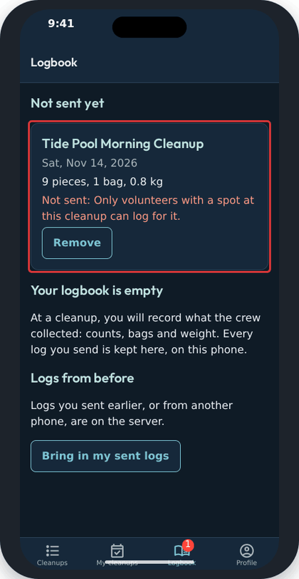

📴 Lesson 5.5: Offline First
A beach is a bad place for a network. The signal comes and goes with the wind and the cliffs, and the volunteer with the debris log is tired, sandy and ready to go home. An app that says "No connection, try again later" has just lost that log. Today Shoreline Crew stops depending on luck: a log is saved on the phone the moment the volunteer presses Send, and it reaches the server by itself whenever the phone finds a signal, even if the app was closed in between.
🎯 Learning Objectives
By the end of this lesson, you will be able to:
- Explain "offline first" as an outbox: write on the device first, send when you can, and say what a paused mutation from Lesson 5.2 cannot do
- Persist a Zustand store on a phone with
persistand AsyncStorage, load it behind the splash screen, and say what differs from the web course'slocalStoragestore - Send a queue safely: one log at a time, the same
clientIdon every try, and a different reaction to each kind of answer (sent, refused, signed out, no answer) - Choose the moments to send (start, sign-in, back online, back in the foreground) with the online and focus managers you already have
- Keep each volunteer's unsent work apart on a shared phone
📦 Code for this lesson
Starting code: lesson-19-start.zip · Finished code: lesson-19-end.zip. Each folder has a README with the commands to run it.
In This Lesson
👋 Welcome: The Log That Was Lost
If you did last lesson's "Before the Next Lesson" task, you sent a debris log in airplane mode, force-quit Expo Go, and watched the log disappear. Lesson 5.4 was honest about it: the screen said "Keep the app open until then." A TanStack Query mutation that pauses for the network waits in memory, and memory ends when the app does. Phones end apps all the time: the volunteer swipes it away, the phone runs low on memory while the camera is open, the battery dies on the walk back to the car.
Today the log goes somewhere that outlives the app before the app tries the network at all. By the end of the lesson:
- Send always works, signal or not: the log goes into a queue saved on the phone, and the screen says honestly whether it reached the server or is waiting.
- The queue empties itself when the app starts, when a volunteer signs in, when the phone is back online and when the app returns to the foreground. A retry can never make a duplicate.
- The Logbook tab shows what is not sent yet, with a count on the tab, and keeps each volunteer's unsent logs to themselves on a shared phone.
Why it matters for your work: "works offline" is on the wish list of nearly every field app (inspections, deliveries, surveys, health visits), and it is where many teams lose data without noticing. Being the developer who can explain what happens to a record on the third failed try, and prove it, is a real edge in an interview and on a team.
Why it matters for the volunteers: the season report is only as good as the logs that arrive. A log that vanished is bottles nobody will ever count.
🌱 Slow is smooth today
Offline code is the kind where "it works on my desk" means very little: the bugs live in the orders of events you did not try. The lesson tries them for you (the measurements say so), and the project has you try the important ones yourself. If an order of events confuses you, draw it on paper. Nobody gets this right by typing faster.
📮 Offline First: An Outbox on the Phone
Your email app already works this way. You press Send in a tunnel, the message goes to the Outbox, and it leaves when the phone finds a network. Nobody asks you to keep the app open. That is the whole idea of offline first: the app writes to the device first, treats the network as something that comes and goes, and sends later.
💡 Mental model: the logbook in a dry bag
On the beach, the crew leader does not phone in each count the moment it is made. The counts go into a logbook in a dry bag, and the bag rides home in the van whatever the weather. At the office, someone copies the pages to headquarters, ticks each one off, and asks again about any page headquarters did not confirm. The queue is the dry bag: once a log is in it, rain (no signal) and a capsized kayak (the app closing) do not matter. The clientId is the page number that stops headquarters from filing the same page twice.
Lesson 5.2's paused mutation got the first half right (wait instead of failing) and Lesson 5.4's clientId made a resend harmless. What was missing is a place that survives the app. Here is what changes:
| Lesson 5.4: a paused mutation | Today: a saved queue | |
|---|---|---|
| Where the log waits | In memory (TanStack Query's mutation cache) | In AsyncStorage, written the moment Send is pressed |
| The app is closed | The log is gone | The log is read back at the next start |
| Who sends it | The mutation, when the online manager says online | A small sender the app calls at start, sign-in, reconnect and foreground |
| A resend | Safe (same clientId) | Safe (the clientId is saved with the log) |
| Where the volunteer sees it | Only on the form, while it stays open | On the form and on the Logbook tab, with a count on the tab |
The life of one log, from the Send button to the logbook:
Two rules make this safe. The log is saved before anything is sent, so there is no moment when it exists only in memory. And it leaves the queue only after the server has it and the logbook has a copy, so a crash between those steps means "send it again", which the clientId makes harmless. Lesson 5.3's rule still holds: the phone keeps copies, the server keeps the truth. The queue is simply a copy that is still on its way.
Shoreline Crew queues only debris logs. Sign-ups stay as Lesson 5.2 left them, waiting in memory: a sign-up is decided by the server (a spot or the waiting list), so a volunteer needs the answer now, not "later, somehow". Queue the things a person creates (a log, a note, a photo) and let the things the server decides wait for the server.
🐻 Zustand on a Phone: persist with AsyncStorage
The queue is client state that must survive the app, which is exactly what you built in the web course's Lesson 7.3: a Zustand store with the persist middleware, create<T>()(persist(…)), a name, a merge that checks what was saved, getState() outside React and useShallow for selectors that build new arrays. All of it comes across. Shoreline Crew has not used Zustand so far, on purpose: Lesson 5.3 wrote its settings store by hand, so you can now see what persist writes for you.
| Job | Lesson 5.3's settings store (by hand) | Today's queue (Zustand persist) |
|---|---|---|
| Hold the state, notify screens | current, a listener set, useSyncExternalStore | create() and the useLogQueue Hook |
| Save after every change | AsyncStorage.setItem in changeSettings | Automatic, after every set |
| Read back at startup | loadSettings() | useLogQueue.persist.rehydrate() |
| Check what was saved | fromSaved() | The merge option (the HQ's pattern) |
| Save only some of it | Not needed | The partialize option |
For one setting, the hand-written store was short and clear. For a list of records that changes from several places (the form adds, the sender changes and removes, the Logbook removes), persist earns its place. Three things are different on a phone.
1. There is no localStorage: say where to save
On the web, persist saves in localStorage unless told otherwise. A phone has no localStorage, so the queue names its storage: storage: createJSONStorage(() => AsyncStorage). createJSONStorage turns the state into JSON on the way in and back on the way out, and accepts a storage whose methods return promises, which AsyncStorage's do. Forget it, and the web preview still works (it has localStorage), which is exactly why the mistake is easy to ship. Common Mistakes shows what the phone does instead.
2. Loading is async: wait behind the splash screen
In the browser, localStorage answers at once, so a persisted store is loaded before your first render. AsyncStorage answers later. Until it does, the store holds its starting state, an empty queue, and any code that reads it then is wrong: the sender would find nothing to send. So the queue sets skipHydration: true ("do not load by yourself") and exports loadLogQueue(), which calls useLogQueue.persist.rehydrate(). The root layout adds it to Lesson 5.3's Promise.all behind the splash screen, next to the session and the settings, and only starts sending once all three are in.
3. Save only what should survive
The store holds two things: logs, the queue itself, and sending, "a send is running right now". The second must not survive: an app killed in the middle of a send that came back believing it was still sending would never send again. partialize: ({ logs }) => ({ logs }) saves the logs only, and the merge reads back only the logs, so sending always starts as false. What is saved looks like this (from the web preview's storage, where AsyncStorage keeps its keys in localStorage; measured, shortened):
{
"state": {
"logs": [
{
"event": { "id": "e17", "title": "Tide Pool Morning Cleanup", "...": "..." },
"log": { "clientId": "c3a0f6b2-…", "items": [{ "category": "glass", "count": 2 }], "...": "..." },
"volunteerId": "v04",
"status": "waiting",
"attempts": 0,
"problem": null
}
]
},
"version": 0
}Each queued item is Lesson 5.4's LogToSend ({ event, log }) unchanged, plus four fields of its own: whose log it is, its status ('waiting' or 'refused'), how many tries got no answer, and the server's words if it refused. The version is persist's own number (0 by default), there for the day the shape changes, as in the web course.
🔁 Safe Retries: Every Answer Means Something
The sender, sendWaitingLogs(volunteerId), takes the volunteer's waiting logs oldest first and sends them one at a time. One at a time keeps the order the volunteer recorded them in, and it means the first sign of trouble stops the run instead of firing ten doomed requests into a dead network. For each log, the answer decides what happens next:
| The answer | What it means | The queue |
|---|---|---|
| 201 Created | A new log, saved | Save the server's copy in the logbook (Lesson 5.3's saveSentLogs), then remove it from the queue |
| 200 OK | The server already had a log with this clientId: an earlier try got through, but its answer was lost | The same as 201: it is done |
| 400, 403, 404, 409 | A "no" about this log (no spot at the cleanup, the cleanup has not happened, a field the server rejects) | Mark it refused with the server's message; never send it again by itself (the answer would not change) |
| 401 | The sign-in has ended | Keep everything, show "Your sign-in has ended" (Lesson 5.2's notice), stop until someone signs in |
| No answer, or 500 | No connection, a timeout, the API down: nobody knows if it arrived | Keep it waiting, count the try, stop for now |
The last row is the one the clientId exists for. "No answer" does not mean "not saved". Measured in the web preview: the first request reached shoreline-api and was saved (201 at the server), the phone's side of the connection was cut before the answer arrived, the log stayed in the queue with one try counted; the next try sent the same clientId, the API answered 200 with the log it already had, and the server still held exactly one log. Without the clientId, the only safe choices would be "never retry" (lose logs) or "always retry" (count bottles twice).
One detail in the order matters: the log is written into the logbook before it leaves the queue. If saving to SQLite failed, the log would still be waiting, and the next try's 200 would bring the same log back for the logbook. Every step can be repeated safely, so every failure has the same fix: try again later.
💡 Retryable or not?
The question to ask of any failure is: would asking again, unchanged, ever get a different answer? A dead network or a busy server: yes, later. A 403 "no spot": no, not until something else changes. Retrying the second kind forever drains the battery and hides the real problem from the volunteer; giving up on the first kind loses data. The same question gave Lesson 5.2 its retry rule for queries (no retry for a 4xx).
⏰ When to Send
A queue that never gets asked to send is just a list. Shoreline Crew calls sendWaitingLogs at five moments, and because the function does nothing when it is offline, already running, or has nothing to send, calling it "too often" is harmless:
| Moment | Who notices | Where |
|---|---|---|
| Send is pressed | The form | log/[id].tsx |
| The app starts with a volunteer signed in, or someone signs in | The session changes | a Hook in the root layout, useSendWaitingLogs |
| The phone is back online | TanStack Query's onlineManager (NetInfo on a phone, Lesson 5.2) | the same Hook |
| The app is back in the foreground | TanStack Query's focusManager (AppState on a phone, Lesson 5.2) | the same Hook |
| The volunteer presses Send now | The Logbook tab | (tabs)/logbook.tsx |
The managers are the reason Lesson 5.2 wired them up: there is now one place in the app that knows "online" and one that knows "in the foreground", on every platform. On a phone, NetInfo and AppState feed them; in the web preview, the browser does. onlineManager.subscribe and focusManager.subscribe call back with true or false each time that changes, and onlineManager.isOnline() answers the question at any moment.
"Back in the foreground" is there because a phone suspends an app in the background: while the volunteer drives home with Shoreline Crew in the background, nothing in it runs, so the reconnect may happen while nobody is listening. Coming back to the app is the next chance. What the course does not do is send while the app is closed; the FAQ says why and what that would take.
⚠️ Common Mistakes
Each mistake below was made on purpose in a copy of the finished project and measured in the web preview, unless it says otherwise.
⚠️ persist with no storage
The web course's store had no storage option, and copying it type-checks, lints and works in the web preview, which has localStorage. On a phone, window exists but window.localStorage does not, so persist's default storage has nothing behind it. Running Zustand 5.1's persist that way in Node (a window without localStorage, as on a phone), the very first change failed:
Expected output
add threw: TypeError: Cannot read properties of undefined (reading 'setItem')On a phone that would be a red error screen when Send is pressed (Hermes words the message "Cannot read property 'setItem' of undefined"; not run on a phone here). Always name the storage: createJSONStorage(() => AsyncStorage).
⚠️ Sending every waiting log with whoever is signed in
A sender that sends the whole queue (no volunteerId filter, no session check) looks simpler and passes every check you would think of with one person. Measured with two: Theo sent a log offline and signed out; Maya signed in once the connection was back. The sender sent Theo's log with Maya's token, shoreline-api answered 201 and saved it as Maya's (Maya is an organizer, who may log for any cleanup), Maya's logbook listed it, and the server had no log from Theo at all. With a volunteer who had no spot, the same log would have come back refused. Filter by volunteerId, and check the session before each request.
⚠️ Treating every failure the same
Two opposite versions of one mistake. "Any error: try again later" keeps a 403 log in the queue forever: it is re-sent at every start and every reconnect, refused every time, and the volunteer never learns why it never arrives. "Any error: give up" throws away a log that only met a dead network, the one case the queue exists for. Sort the answers as in Safe Retries: done (201, 200), refused (other 4xx, kept with the server's words), stop and sign in (401), wait (no answer, 5xx).
⚠️ A filtered list from the store without useShallow
The Logbook selects "my logs" with state.logs.filter(…), which builds a new array on every call. Without useShallow, Zustand sees a new answer every time it asks, renders again, gets another new array, and so on (the web course's Lesson 7.3 mistake, unchanged on a phone). Measured in the web preview's export: signing in on the Logbook tab left a blank page and React's error #185, "Maximum update depth exceeded". Wrap such selectors in useShallow, or select something that stays the same, like the .length the tab badge uses.
⚠️ Only invalidating the logbook after a send
Lesson 5.3 refreshed the logbook with invalidateQueries({ queryKey: ['logbook'] }), and that was the first version of the sender too. Measured: Theo signed in on the Logbook tab with a log waiting; the log was sent (201) and saved in SQLite, and the Logbook still said "Your logbook is empty". The first read of the logbook had started when the screen appeared, before the save, and TanStack Query restarts a running fetch only for a query that already has data (read in its source: cancelRefetch applies "only if the query has data"); otherwise the invalidation simply waits for the running read and its old answer. cancelQueries first, then invalidateQueries, starts a fresh read after the save.
🛠️ Project: The Debris Log Queue
You install Zustand, build the queue store and the sender, load the queue behind the splash screen and send at the right moments, then hand the form's log to the queue and show what is waiting on the Logbook tab. Last, you take the connection away and watch nothing get lost. Work in shoreline-crew, with shoreline-api running in a second terminal (with --host for your phone, as in Lesson 5.1).
Step 1: Install Zustand (5 min)
Stop Metro with Ctrl+C (also Ctrl+C on a Mac). AsyncStorage is already in the project (Lesson 5.3); Zustand is the only new package:
npx expo install zustandExpected output
env: load .env.local
env: export EXPO_PUBLIC_API_URL
› Installing 1 other package using npm
> npm install --save zustand
added 1 package, and audited 811 packages in 2s
167 packages are looking for funding
run `npm fund` for details
8 moderate severity vulnerabilities
To address issues that do not require attention, run:
npm audit fix
To address all issues (including breaking changes), run:
npm audit fix --force
Run `npm audit` for details."1 other package": Zustand is plain JavaScript, not an Expo SDK module, so Expo passes it to npm unchanged and you get the HQ's version, zustand ^5.1.0. It runs in Expo Go with no development build. The vulnerabilities line is npm's audit of the whole project, as before.
Step 2: The queue (15 min)
Create src/state/logQueue.ts, next to Lesson 5.3's settings:
// The debris logs waiting to be sent (new): a Zustand store that saves itself on the phone with
// AsyncStorage, so a log finished with no signal survives closing the app (src/state/sendLogs.ts
// sends it later). Lesson 5.3's settings store saves by hand; Zustand's persist does it for us.
import AsyncStorage from '@react-native-async-storage/async-storage';
import { create } from 'zustand';
import { createJSONStorage, persist } from 'zustand/middleware';
import { isCleanupEvent } from '@/api/client';
import type { LogToSend } from '@/api/schemas';
/** 'waiting': not on the server yet. 'refused': the server said no, and would say it again. */
export type QueuedLogStatus = 'waiting' | 'refused';
/** One log in the queue: what to send, whose it is, and how sending it has gone so far */
export type QueuedLog = LogToSend & {
volunteerId: string; // the volunteer who wrote it: only their sign-in may send it
status: QueuedLogStatus;
attempts: number; // tries that got no answer (no connection, server trouble)
problem: string | null; // the server's words, when it refused
};
type LogQueue = {
logs: QueuedLog[];
sending: boolean;
add: (volunteerId: string, item: LogToSend) => void;
change: (clientId: string, changes: Partial<QueuedLog>) => void;
remove: (clientId: string) => void;
setSending: (sending: boolean) => void;
};
// A saved log is checked like API data before the app trusts it: an older version of the app
// (or a bug) may have written something else
function isQueuedLog(value: unknown): value is QueuedLog {
return (
typeof value === 'object' &&
value !== null &&
'volunteerId' in value &&
typeof value.volunteerId === 'string' &&
'status' in value &&
(value.status === 'waiting' || value.status === 'refused') &&
'attempts' in value &&
typeof value.attempts === 'number' &&
'event' in value &&
isCleanupEvent(value.event) &&
'log' in value &&
typeof value.log === 'object' &&
value.log !== null &&
'clientId' in value.log &&
typeof value.log.clientId === 'string'
);
}
export const useLogQueue = create<LogQueue>()(
persist(
(set) => ({
logs: [],
sending: false,
add: (volunteerId, item) =>
set(({ logs }) => {
if (logs.some(({ log }) => log.clientId === item.log.clientId)) {
return {}; // the same log twice (same clientId) is still one log
}
const queued: QueuedLog = {
...item,
volunteerId,
status: 'waiting',
attempts: 0,
problem: null,
};
return { logs: [...logs, queued] };
}),
change: (clientId, changes) =>
set(({ logs }) => ({
logs: logs.map((item) =>
item.log.clientId === clientId ? { ...item, ...changes } : item,
),
})),
remove: (clientId) =>
set(({ logs }) => ({ logs: logs.filter(({ log }) => log.clientId !== clientId) })),
setSending: (sending) => set({ sending }),
}),
{
name: 'shoreline-crew-log-queue',
// A phone has no localStorage: tell persist where to keep the queue
storage: createJSONStorage(() => AsyncStorage),
// Save the logs only. "Sending right now" ends when the app closes
partialize: ({ logs }) => ({ logs }),
// Keep only the saved logs that pass the check
merge: (saved, current) => {
const logs =
typeof saved === 'object' && saved !== null && 'logs' in saved ? saved.logs : [];
return { ...current, logs: Array.isArray(logs) ? logs.filter(isQueuedLog) : [] };
},
// Reading AsyncStorage is async: the root layout loads the queue behind the splash screen
skipHydration: true,
},
),
);
/** Read the saved queue. Call it once, when the app starts. */
export function loadLogQueue(): Promise<void> {
return useLogQueue.persist.rehydrate();
}QueuedLogis Lesson 5.4'sLogToSendwith four fields added. The intersection type (&) keeps the two in step: if 6.2 adds photos toLogToSend, the queue carries them with no change here.- The actions (
add,change,remove,setSending) are the only ways in; everysetis saved by persist.addignores aclientIdit already has, so a double press can never queue one log twice. isQueuedLogchecks a saved log the wayclient.tschecks API data, reusingisCleanupEvent;mergekeeps the logs that pass. Measured: a saved queue with one good log and one in an old shape kept the good one (and sent it); a saved value that was not JSON at all left an empty queue and a working app.- The four persist options are the three phone differences from Zustand on a Phone plus the HQ's
merge. The key,shoreline-crew-log-queue, sits next to Lesson 5.3'sshoreline-crew-settingsin AsyncStorage.
The store knows nothing about the network: it holds and saves. Sending is the next file's job.
Step 3: Emptying the queue (15 min)
Create src/state/sendLogs.ts:
// Emptying the queue (new): sends a volunteer's waiting debris logs, and decides from each answer
// whether a log is done, refused, or still waiting. Safe to repeat: every log keeps its clientId.
import { onlineManager } from '@tanstack/react-query';
import { ApiError, postLog, readSession } from '@/api/client';
import { queryClient } from '@/api/queries';
import { markSignInEnded } from '@/auth/ended';
import { useLogQueue } from '@/state/logQueue';
import { saveSentLogs } from '@/storage/logbook';
/**
* Send one volunteer's waiting logs, oldest first, one at a time. Call it as often as you like:
* offline, while a send is running, or with nothing waiting, it does nothing.
*/
export async function sendWaitingLogs(volunteerId: string): Promise<void> {
const queue = useLogQueue.getState();
if (queue.sending || !onlineManager.isOnline()) {
return;
}
const waiting = queue.logs.filter(
(item) => item.volunteerId === volunteerId && item.status === 'waiting',
);
if (waiting.length === 0) {
return;
}
queue.setSending(true);
try {
for (const item of waiting) {
// Each request carries the signed-in volunteer's token: never send someone else's log
if (readSession()?.user.id !== volunteerId) {
break;
}
const clientId = item.log.clientId;
try {
// 201 the first time; 200 with the same saved log if an earlier try got through
// but its answer was lost. Either way the server has it once.
const saved = await postLog(item.event.id, item.log);
await saveSentLogs([{ log: saved, event: item.event }]);
useLogQueue.getState().remove(clientId);
} catch (error) {
if (error instanceof ApiError && error.status === 401) {
markSignInEnded(); // the sign-in has ended: keep everything for the next one
break;
}
if (error instanceof ApiError && error.status < 500) {
// A "no" (403 no spot, 409 not yet, 400 a field): sending again gets the same answer
useLogQueue.getState().change(clientId, { status: 'refused', problem: error.message });
} else {
// No answer, or server trouble: keep it, count the try, and stop until the next chance
useLogQueue.getState().change(clientId, { attempts: item.attempts + 1 });
break;
}
}
}
} finally {
useLogQueue.getState().setSending(false);
// Read the logbook again. A first read may have started before these logs were saved, and
// invalidating would only wait for it: cancel it first, so the new read starts after the save
await queryClient.cancelQueries({ queryKey: ['logbook'] });
await queryClient.invalidateQueries({ queryKey: ['logbook'] });
}
}- The guards come first. Already sending, offline, or nothing waiting: return. That is what lets five different moments call it without coordinating.
useLogQueue.getState()reads and changes the store outside React (web course: the same call). The loop reads it again after eachawaitinstead of reusingqueue, because the store may have changed while the request was out (the Logbook's Remove, another log added).- The answers follow the table in Safe Retries.
postLogis Lesson 5.4's request, andsaveSentLogsis Lesson 5.3's: the logbook stores the server's copy, the same path Lesson 5.4's mutation used. finallyclearssendingwhatever happened and refreshes the logbook (the cancel-then-invalidate pair from Common Mistakes).
With the sender in place, Lesson 5.4's sendLogMutation has no job left: one path sends logs now, and it is this one. Delete it from src/api/mutations.ts:
-import { cancelSignup, getEventLogs, postLog, postSignup } from '@/api/client';
+import { cancelSignup, getEventLogs, postSignup } from '@/api/client';
import { mySignupsQuery, queryClient } from '@/api/queries';
-import type { LogToSend } from '@/api/schemas';
import { saveSentLogs } from '@/storage/logbook';
// ...
}
-
-/**
- * Send a debris log from the form (Lesson 5.4), then keep a copy in the logbook on this phone.
- * Offline it waits, like every mutation, but only in memory: Lesson 5.5 makes the wait survive
- * closing the app, with a queue of LogToSend items.
- */
-export function sendLogMutation() {
- return mutationOptions({
- mutationFn: ({ event, log }: LogToSend) => postLog(event.id, log),
- // The server's answer (the saved log) goes into the logbook with its cleanup
- onSuccess: async (saved, { event }) => {
- await saveSentLogs([{ log: saved, event }]);
- await queryClient.invalidateQueries({ queryKey: ['logbook'] });
- },
- });
-}Step 4: Load the queue, and send at the right moments (10 min)
Create the Hook that calls the sender, src/hooks/useSendWaitingLogs.ts:
import { focusManager, onlineManager } from '@tanstack/react-query';
import { useEffect } from 'react';
import { sendWaitingLogs } from '@/state/sendLogs';
/**
* Send the signed-in volunteer's waiting debris logs: now (the app opened, or someone signed in),
* and again each time the phone is back online or the app is back in the foreground.
* Use once, in the root layout, with null until the saved queue has loaded.
*/
export function useSendWaitingLogs(volunteerId: string | null): void {
useEffect(() => {
if (volunteerId === null) {
return;
}
const send = () => {
void sendWaitingLogs(volunteerId);
};
send();
// The two managers from Lesson 5.2: NetInfo and AppState on a phone, the browser on the web
const stopOnline = onlineManager.subscribe((online) => {
if (online) {
send();
}
});
const stopFocus = focusManager.subscribe((focused) => {
if (focused) {
send();
}
});
return () => {
stopOnline();
stopFocus();
};
}, [volunteerId]);
}The effect runs again whenever volunteerId changes, so signing in starts a send for the new person, and signing out (null) removes the listeners. void marks the promise as deliberately not awaited: nothing here waits for the send, and the sender never throws. Then, in src/app/_layout.tsx, load the queue with the session and the settings, and use the Hook:
import { useOnlineManager } from '@/hooks/useOnlineManager';
+import { useSendWaitingLogs } from '@/hooks/useSendWaitingLogs';
import { useSession } from '@/hooks/useSession';
import { useTheme } from '@/hooks/useTheme';
+import { loadLogQueue } from '@/state/logQueue';
import { loadSettings } from '@/state/settings';
// ...
-// Keep the splash screen up while the fonts, the session and the settings load (once, at startup)
+// Keep the splash screen up while the fonts, the session, the settings and the queue of unsent
+// debris logs load (once, at startup)
SplashScreen.preventAutoHideAsync();
// ...
useOnlineManager();
+ // Once the saved queue is loaded, whoever is signed in sends their waiting logs
+ useSendWaitingLogs(savedLoaded && session !== null ? session.user.id : null);
useEffect(() => {
- Promise.all([loadSession(), loadSettings()]).finally(() => setSavedLoaded(true));
+ Promise.all([loadSession(), loadSettings(), loadLogQueue()]).finally(() =>
+ setSavedLoaded(true),
+ );
}, []);The Hook gets null until savedLoaded: before the queue is read back, there is nothing to send, and a send then would look at an empty queue and do nothing.
Step 5: The form hands its log to the queue (15 min)
In src/app/log/[id].tsx, the form stops sending. It adds the log to the queue, asks the queue to send, and then shows what the queue knows about that log. The changes:
import { zodResolver } from '@hookform/resolvers/zod';
-import { useMutation, useQuery } from '@tanstack/react-query';
+import { useQuery } from '@tanstack/react-query';
import { randomUUID } from 'expo-crypto';
// ...
-import { ApiError, describeError } from '@/api/client';
-import { sendLogMutation } from '@/api/mutations';
+import { describeError } from '@/api/client';
import { mySignupsQuery, viewerId } from '@/api/queries';
import { type DebrisLogValues, debrisLogSchema, toNewLog } from '@/api/schemas';
-import type { CleanupEvent, CleanupLog } from '@/api/types';
+import type { CleanupEvent, NewCleanupLog } from '@/api/types';
import { AppText } from '@/components/AppText';
// ...
import { useSession } from '@/hooks/useSession';
+import { type QueuedLog, useLogQueue } from '@/state/logQueue';
+import { sendWaitingLogs } from '@/state/sendLogs';
import { spacing } from '@/theme/spacing';
// ...
}
- return <DebrisLogForm event={held.event} />;
+ return <DebrisLogForm event={held.event} viewer={viewer} />;
}
// ...
-function DebrisLogForm({ event }: { event: CleanupEvent }) {
+function DebrisLogForm({ event, viewer }: { event: CleanupEvent; viewer: string }) {
// One id per log, made on the phone the moment the form opens: if the same log is sent twice
// ...
const [clientId] = useState(() => randomUUID());
- const sendLog = useMutation(sendLogMutation());
+ // The log handed to the queue (null until Send), and what the queue knows about it now
+ const [handedOver, setHandedOver] = useState<NewCleanupLog | null>(null);
+ const queued = useLogQueue((state) => state.logs.find((item) => item.log.clientId === clientId));
+ const sending = useLogQueue((state) => state.sending);
+ const addLog = useLogQueue((state) => state.add);
const {
// ...
- // Checked by the schema first; the time is when Send was pressed, not when the form opened
- const send = handleSubmit((data) =>
- sendLog.mutate({ event, log: toNewLog(data, clientId, new Date()) }),
- );
-
- if (sendLog.isSuccess) {
- return <LogSent event={event} log={sendLog.data} />;
- }
-
- // The server's "no" in its own words (403 no spot, 409 not yet, 400 fields), else the usual text
- const error = sendLog.error;
- const problem =
- error === null
- ? null
- : error instanceof ApiError && error.status >= 400 && error.status < 500 && error.status !== 401
- ? error.message
- : describeError(error);
+ // Checked by the schema first; the time is when Send was pressed, not when the form opened.
+ // The log goes into the queue (saved on the phone at once), and the queue sends it if it can.
+ const send = handleSubmit((data) => {
+ const log = toNewLog(data, clientId, new Date());
+ addLog(viewer, { event, log });
+ setHandedOver(log);
+ void sendWaitingLogs(viewer);
+ });
+
+ if (handedOver !== null) {
+ return <LogHandedOver event={event} log={handedOver} queued={queued} sending={sending} />;
+ }
// ...
)}
- {sendLog.isPaused && (
- <AppText variant="muted" accessibilityLiveRegion="polite">
- No connection: your log is sent when you are back online. Keep the app open until then.
- </AppText>
- )}
- {problem !== null && (
- <AppText variant="error" accessibilityRole="alert">
- Not sent. {problem}
- </AppText>
- )}
- <Button
- label={sendLog.isPending ? 'Sending…' : 'Send the log'}
- variant="primary"
- disabled={sendLog.isPending}
- onPress={() => send()}
- />
+ <Button label="Send the log" variant="primary" onPress={() => send()} />
</FormScreen>
// ...
-// After a 201 (or a 200 for a resend): what the server saved, and where to see it
-function LogSent({ event, log }: { event: CleanupEvent; log: CleanupLog }) {
+type HandedOverProps = {
+ event: CleanupEvent;
+ log: NewCleanupLog;
+ queued: QueuedLog | undefined; // undefined: it has left the queue, so the server has it
+ sending: boolean;
+};
+
+// After Send: sent, still waiting (saved on the phone), or refused, read from the queue
+function LogHandedOver({ event, log, queued, sending }: HandedOverProps) {
const pieces = log.items.reduce((sum, item) => sum + item.count, 0);
+ const heading =
+ queued === undefined
+ ? 'Log sent. Thank you!'
+ : queued.status === 'refused'
+ ? 'The server did not take this log'
+ : sending
+ ? 'Sending your log…'
+ : 'Saved on this phone';
return (
<Screen scroll edges={['bottom', 'left', 'right']}>
- <AppText variant="heading" accessibilityRole="header">
- Log sent. Thank you!
+ <AppText variant="heading" accessibilityRole="header" accessibilityLiveRegion="polite">
+ {heading}
</AppText>
- <AppText accessibilityLiveRegion="polite">
+ <AppText>
{event.title}: {pieces} {pieces === 1 ? 'piece' : 'pieces'}, {log.bags}{' '}
- {log.bags === 1 ? 'bag' : 'bags'}, {log.weightKg} kg. It is in your logbook too.
+ {log.bags === 1 ? 'bag' : 'bags'}, {log.weightKg} kg.
</AppText>
+ {queued === undefined && <AppText>It is in your logbook too.</AppText>}
+ {queued?.status === 'waiting' && !sending && (
+ <AppText>
+ It goes to the server by itself when you are back online, even if you close the app.
+ Your logbook shows it as waiting until then.
+ </AppText>
+ )}
+ {queued?.status === 'refused' && (
+ <AppText variant="error" accessibilityRole="alert">
+ {queued.problem} The log stays in your logbook until you remove it.
+ </AppText>
+ )}
<Button label="Done" variant="primary" onPress={leave} />- The
clientIdis still made when the form opens (Lesson 5.4), and now saved with the log, so every try of that log carries it. Making it inaddwould work too; keeping it in the form means the form can find its own log in the queue. queuedis a Zustand selector that returns one item (orundefined), the same object until that item changes, so it needs nouseShallow. The face reads it: gone from the queue means sent;'refused'shows the server's words; waiting shows "Saved on this phone".- What went away:
isPaused,isPendingand the error line. The form can no longer fail: it saves on the phone, which always works, and the rest is the queue's business, shown on the face and the Logbook. viewercomes down fromLogForCleanup: the queue needs to know whose log it is.
Step 6: The Logbook shows what is not sent yet (15 min)
In src/app/(tabs)/logbook.tsx, MyLogbook reads the volunteer's queued logs and lists them above the logbook:
import { StyleSheet, View } from 'react-native';
+import { useShallow } from 'zustand/react/shallow';
// ...
import { createThemedStyles } from '@/hooks/useTheme';
+import { type QueuedLog, useLogQueue } from '@/state/logQueue';
+import { sendWaitingLogs } from '@/state/sendLogs';
import type { LogbookEntry, LogbookTotals } from '@/storage/logbook';
// ...
const bringIn = useMutation(bringInSentLogsMutation(viewer));
+ // This volunteer's logs that are not on the server yet. filter makes a new array every time:
+ // useShallow compares the items instead, as in the web course
+ const queued = useLogQueue(
+ useShallow((state) => state.logs.filter((item) => item.volunteerId === viewer)),
+ );
+ const sending = useLogQueue((state) => state.sending);
+ const removeLog = useLogQueue((state) => state.remove);
const styles = useStyles();
// ...
+ function waitingEntry(item: QueuedLog) {
+ const { event, log } = item;
+ const pieces = log.items.reduce((sum, { count }) => sum + count, 0);
+ return (
+ <View key={log.clientId} style={styles.card}>
+ <AppText variant="heading">{event.title}</AppText>
+ <AppText variant="muted">{formatDate(event.date)}</AppText>
+ <AppText>{amounts({ pieces, bags: log.bags, weightKg: log.weightKg })}</AppText>
+ {item.status === 'waiting' ? (
+ <AppText variant="muted">
+ Waiting to be sent{item.attempts > 0 && ` (tries so far: ${item.attempts})`}
+ </AppText>
+ ) : (
+ <>
+ <AppText variant="error">Not sent: {item.problem}</AppText>
+ <Button
+ label="Remove"
+ accessibilityLabel={`Remove the log for ${event.title}`}
+ onPress={() => removeLog(log.clientId)}
+ />
+ </>
+ )}
+ </View>
+ );
+ }
+
+ const waitingCount = queued.filter((item) => item.status === 'waiting').length;
+
return (
<Screen scroll edges={['left', 'right']}>
+ {queued.length > 0 && (
+ <>
+ <AppText variant="heading" accessibilityRole="header">
+ Not sent yet
+ </AppText>
+ {(sending || waitingCount > 0) && (
+ <AppText accessibilityLiveRegion="polite">
+ {sending
+ ? 'Sending…'
+ : 'Saved on this phone. Waiting logs go to the server by themselves ' +
+ 'when you are back online.'}
+ </AppText>
+ )}
+ {queued.map(waitingEntry)}
+ {waitingCount > 0 && (
+ <Button
+ label="Send now"
+ disabled={sending}
+ onPress={() => sendWaitingLogs(viewer)}
+ />
+ )}
+ </>
+ )}
<AppText variant="heading" accessibilityRole="header">useShallowwraps the filtered list (see Common Mistakes).- Each card uses the same
amounts()as the logbook's entries, then the status: "Waiting to be sent" (with the count of tries that got no answer), or the server's refusal and a Remove button whose label names the cleanup, so a screen reader user knows which log goes. - Send now appears only when something is waiting, and is disabled while a send runs. It is the volunteer's way to say "I have signal now", useful after a try that got no answer.
MyLogbookis still its own component (Lesson 5.3), and the selector filters byviewer: the next person on a shared phone sees only their own logs.
A refused log is hard to make on purpose (the screens stop you from logging without a spot), so this one was set up: Amara signed in on a phone holding her log for a cleanup she has no spot at, the queue sent it, and the server said no.

Step 7: A count on the Logbook tab (5 min)
A volunteer who closes the log form should still see that something is waiting. Tab bars have a place for that, the badge. In src/app/(tabs)/_layout.tsx:
import { Icon } from '@/components/Icon';
+import { useSession } from '@/hooks/useSession';
import { useTheme } from '@/hooks/useTheme';
+import { useLogQueue } from '@/state/logQueue';
import { fonts } from '@/theme/typography';
// ...
const { colors } = useTheme();
+ // How many of the signed-in volunteer's logs are not on the server yet (a number: no useShallow)
+ const session = useSession();
+ const unsent = useLogQueue(
+ (state) => state.logs.filter((item) => item.volunteerId === session?.user.id).length,
+ );
// ...
tabBarIcon: ({ color, size }) => <Icon name="logbook" color={color} size={size} />,
+ // A small count on the tab while logs wait, and the same news for a screen reader
+ tabBarBadge: unsent > 0 ? unsent : undefined,
+ tabBarAccessibilityLabel: unsent > 0 ? `Logbook, ${unsent} not sent yet` : 'Logbook',
}}The selector returns a number, which stays equal between calls when nothing changed, so no useShallow. A badge is a small red circle to the eye and nothing to a screen reader unless you say it: tabBarAccessibilityLabel makes the tab read "Logbook, 1 not sent yet" (measured as the tab's aria-label in the web preview; on a phone it is the accessibility label VoiceOver and TalkBack read, per React Navigation's documentation).
Step 8: Take the connection away in the web preview (15 min)
Start Metro with npx expo start --clear (a new package), press w, sign in as Theo (theo.nakamura@example.com, shoreline-demo) and open the Logbook tab once (the web preview may load a screen's code the first time you visit it, which it cannot do offline). Two experiments:
A. No connection. Open Chrome's developer tools (F12, or ⌘ Cmd+⌥ Option+I on a Mac), go to the Network panel and switch its throttling menu from "No throttling" to Offline. Open Tide Pool Morning Cleanup, press Log what you collected, fill in a few counts and a weight, and press Send the log:

Press Open my logbook: the log waits on top, and the tab shows a count.

Now switch the throttling back to "No throttling". Within a moment the card moves down into the logbook and the count leaves the tab, and the API's terminal shows one POST /api/events/e17/logs answered 201. Measured with Chromium's offline switch alone (the same switch DevTools uses): no request while offline, "Saved on this phone"; back online, one POST, 201, and "Log sent. Thank you!" on the form if it is still open. TanStack Query's online manager heard the browser's offline and online events, and your Hook heard the online manager.
B. No answer, then "closing the app". This time stop the API instead (Ctrl+C in its terminal): the computer is online, but nobody answers. Send another log. The form says "Saved on this phone", and the Logbook card says "Waiting to be sent (tries so far: 1)": the sender tried, got no answer, and kept the log. Now reload the browser tab, the web preview's version of closing and reopening the app. The web preview forgets the sign-in on a reload (it has no secure store, Lesson 4.3; your phone keeps it), so the Logbook shows its guest face and the tab no count: the queue is still saved, but it belongs to Theo. Start the API again (node server.ts), sign in as Theo from the Logbook tab, and watch: the log goes out right after the sign-in and appears in the logbook. All of B was measured, with the API's requests made to fail instead of stopping it.
To look inside, open the developer tools' Application panel, Local storage: while a log waits, the key shoreline-crew-log-queue holds the JSON from Zustand on a Phone (on a phone it is in AsyncStorage's own files, where you cannot browse it).
Step 9: The real test on your phone, then check and commit (10 min)
With the API running --host and .env.local on your computer's network address (Lesson 5.1), open the app in Expo Go, signed in as Theo:
- Close the app with a log waiting: turn on airplane mode (on iPhone, turn Wi-Fi off too: airplane mode can leave it on), send a log ("Saved on this phone"), then force-quit Expo Go.
- Reopen, still offline: the Logbook tab shows the log under Not sent yet, and the tab its count. This is the step Lesson 5.4 could not pass.
- Turn the connection back on and stay on the Logbook tab: the log should go out within a few seconds, with no button pressed (NetInfo told the online manager, the online manager told your Hook).
- Background, then foreground: send one more offline, switch to another app, turn the connection on, come back: it goes out as the app returns (the focus manager).
📱 On your phone
The web preview checks above were measured; the phone's side (AsyncStorage surviving a force-quit, NetInfo's reconnect, AppState's foreground) is written from the Expo, React Native and NetInfo documentation and could not be run here. If the log does not go out by itself after reconnecting, press Send now, and see the FAQ on why a phone can take a moment to call itself online.
Then the checks:
npx tsc --noEmitnpx expo lintExpected output
env: load .env.local
env: export EXPO_PUBLIC_API_URLtsc prints nothing, and expo lint only the two env: lines. Commit your work.
🧭 For your own app
For your final project, list what a person creates in your app (posts, notes, orders, readings) and, for each, decide: does it need a queue? If yes, give each record an id made on the device, check that the server recognizes a resend (or plan the endpoint that does), write down which answers mean done, refused, signed out and "try later", and decide where the person sees what has not been sent yet.
✅ Project Completion Checklist
- ☐ zustand installed with
npx expo install;src/state/logQueue.tspersists the queue to AsyncStorage, loads it behind the splash screen, saves only the logs and checks them on the way back - ☐
src/state/sendLogs.tssends one volunteer's waiting logs one at a time and sorts every answer (done, refused, signed out, no answer) - ☐ The queue sends at start, sign-in, reconnect, return to the foreground, Send and Send now
- ☐ The log form hands its log to the queue and says sent, saved on this phone, or refused
- ☐ The Logbook tab lists your own unsent logs (Remove for refused ones) and the tab shows their count, read out by a screen reader
- ☐ A log sent in airplane mode survives a force-quit and goes out by itself when the phone is back online; tsc and expo lint are clean, and the work is committed
🏋️ Hands-on Exercises
Optional, but recommended: each one takes five to fifteen minutes. Undo code changes afterwards; the next lesson starts from the project as Step 9 left it.
🏋️ Exercise 1: Predict the queue
Without running anything, say what the Logbook shows and what reaches the server in each case. Theo is signed in unless the case says otherwise.
- Theo sends a log with the API stopped, then presses Send now twice while it is still stopped.
- The answer to Theo's POST is lost on the way back; then the connection returns.
- Amara (no spot at today's cleanup) somehow has a log for it in the queue, and signs in.
- Theo signs out with a log waiting; Maya signs in, then Theo again.
💡 Hint
For each case, find the answer in the table in Safe Retries, and remember whose token goes with each request.
✅ Solution
All four were measured in the web preview. (1) Each press is one more try with no answer: the card counts "tries so far" up, nothing reaches the server, the log stays. (2) The next try sends the same clientId, the API answers 200 with the log it saved the first time, the log moves into the logbook, and the server holds one log, not two. (3) The API answers 403; the card shows "Not sent: Only volunteers with a spot at this cleanup can log for it." with Remove, the tab counts it, and it is never sent again by itself. (4) Nothing is sent while Maya is signed in and her Logbook shows nothing of Theo's; when Theo signs in, his log goes out at once.
🏋️ Exercise 2: Warn before signing out
Signing out keeps Theo's unsent logs on the phone, but Theo may not know he has any. On the Profile tab, above Sign out, show "N of your debris logs are not sent yet…" when there are some.
💡 Hint
The tab layout's badge already counts them: the same selector, a number, needs no useShallow. The session may be null on Profile, so compare with session?.user.id.
✅ Solution
In src/app/(tabs)/profile.tsx, import useLogQueue from @/state/logQueue, add after useSignInEnded():
// Your logs still on this phone (a number: no useShallow needed)
const unsent = useLogQueue(
(state) => state.logs.filter((item) => item.volunteerId === session?.user.id).length,
);and right above the Sign out button:
{unsent > 0 && (
<AppText variant="muted">
{unsent} of your debris {unsent === 1 ? 'log is' : 'logs are'} not sent yet. Signing
out keeps {unsent === 1 ? 'it' : 'them'} on this phone, and they go out the next time
you sign in here.
</AppText>
)}tsc and expo lint pass (checked in a copy of the project). A stronger version would ask "Sign out anyway?" before signing out; React Native's Alert.alert does that on a phone, but it shows nothing in the web preview, so test it in Expo Go.
🏋️ Exercise 3: Try again by itself (Stretch)
When the phone is online but the API does not answer (Step 8's experiment B), the queue waits for the next moment in When to Send, which may be a long time. Make the sender try again by itself after a try with no answer: 10 seconds the first time, then 20, 40 and so on, never more than 5 minutes apart.
💡 Hint
One module-level timer in sendLogs.ts, replaced each time (so tries never pile up), started from the "no answer" branch with the new number of attempts. ReturnType<typeof setTimeout> types it on every platform.
✅ Solution
In src/state/sendLogs.ts, above sendWaitingLogs (type-checked and linted in a copy of the project):
// One timer at a time: 10 s after the first try with no answer, then 20 s, 40 s... up to 5 minutes
let retryTimer: ReturnType<typeof setTimeout> | null = null;
function retryLater(volunteerId: string, attempts: number) {
if (retryTimer !== null) {
clearTimeout(retryTimer);
}
const delay = Math.min(10_000 * 2 ** (attempts - 1), 5 * 60_000);
retryTimer = setTimeout(() => {
retryTimer = null;
void sendWaitingLogs(volunteerId);
}, delay);
}and in the "no answer" branch, after counting the try: retryLater(volunteerId, item.attempts + 1);. Growing waits ("exponential backoff") keep a phone from hammering a server that is already struggling, and from draining its own battery. Two things to think about: a phone suspends timers while the app is in the background (the foreground send covers that), and a timer started for Theo should not fire after Maya signs in (the sender's session check stops it from sending Theo's logs with her token).
🎯 Quick Quiz
🎯 Check Your Understanding
Question 1: On the beach, Theo sends a debris log in airplane mode and force-quits Expo Go. The next morning he opens Shoreline Crew at home, on Wi-Fi, still signed in. What happens to the log?
Question 2: Theo's log reached shoreline-api and was saved, but the answer never reached the phone. The queue keeps the log and tries again later. What does the second try get?
Question 3: A queued log comes back with 403 "Only volunteers with a spot at this cleanup can log for it." What should the queue do with it?
Question 4: On the crew leader's phone, Theo signs out with a log waiting. Maya signs in, and the phone is online. What should happen to Theo's log?
Question 5: A teammate copies the HQ's persisted Zustand store (no storage option) into the phone app. The web preview works. What happens on a phone?
❓ Common Questions at This Stage
Why not let TanStack Query keep the paused mutations?
It can: TanStack Query's documentation shows persisting the whole cache, paused mutations included, with a persister such as @tanstack/query-async-storage-persister, and resuming them at startup with resumePausedMutations(). Because a function cannot be saved, each mutation then needs a default mutationFn registered by key (setMutationDefaults) before resuming. It is a good tool, and worth knowing. The course builds its own queue because it is the thing the volunteer sees and manages (the Logbook's Not sent yet, Remove, the badge), because it must keep volunteers apart on one phone, and because every rule is in two short files you can read. Not run here; see the TanStack Query docs on persistence.
Can the queue send while the app is closed?
Not with today's code: a closed or suspended app runs nothing. Expo has a module for this, expo-background-task, which asks the operating system to run a task now and then, at times the system chooses (Expo's documentation speaks of intervals of at least 15 minutes, and the system may wait much longer). Expo lists it as included in Expo Go, but on iOS it needs a setting in the app's native configuration, and the system, not your code, decides when it runs (by battery, network and how the phone is used), so it cannot promise "the moment the signal returns" and is hard to test. For Shoreline Crew, sending at start, reconnect and foreground covers the real day: the volunteer opens the app again.
What is updatedSince, and why does the Cleanups list not use it?
shoreline-api's GET /api/events takes updatedSince= an ISO time and returns only the cleanups changed after it. Measured: right after asking with the current time, the answer was an empty list; after an organizer changed the meeting point of e17, the same question returned e17 alone, with its new updatedAt. An app that keeps its own copy of every cleanup (in SQLite, say) can then refresh by asking only for what changed, a "delta sync": far less data on one bar of signal. Shoreline Crew's list is a cache of pages that TanStack Query already refreshes, and there is a catch: a sign-up changes a cleanup's spots without changing its updatedAt (read in the API's code), so "what changed" would miss the spots. The Going Further challenge tries it anyway.
The phone has signal again, but nothing was sent. Why?
A few honest reasons. NetInfo can report "connected" slightly later than the status bar shows it, or report Wi-Fi as connected before the network is really usable, and the first try then gets no answer (the card counts it, the log waits). The API may not be reachable from that network at all (Lesson 5.1: a phone on mobile data cannot reach your computer). Or the app was in the background when the connection returned. Send now covers all three, and Exercise 3 makes the queue try again by itself.
How big can the queue get?
A log is well under a kilobyte of JSON (most of it is the cleanup), so a volunteer's whole season fits easily. The queue is saved as one string on every change, which is fine for dozens of logs and would not be for thousands; an app with that many records waiting would keep them in SQLite instead (Lesson 5.3's ledger). Photos (Lesson 6.2) will join a log as file addresses on the phone, never as image data inside the queue.
🌟 Going Further: Bonus Challenge
Try a delta sync. Keep the time of the last full load of upcoming cleanups (in AsyncStorage), and on a pull to refresh ask GET /api/events?when=upcoming&updatedSince=THAT_TIME first; merge what comes back into the cached pages with queryClient.setQueryData, replacing cleanups by id. Then find the flaw the FAQ names (spots from sign-ups) in the web preview: sign up for a cleanup in a second browser profile and watch your delta sync miss it. Decide what a real app should do about it: ask the API team for a change, or keep the full refresh for the numbers that move.
📓 Learning Journal
Take five to ten minutes and add today's entry to your journal:
- Key concepts you learned today
- Techniques that clicked (and the ones that have not, yet)
- Questions or confusion to look up or bring to the next session
- Ideas to try on your own
- Progress and feelings: how did this lesson go for you?
✍️ This lesson's prompt: Draw a timeline of one debris log: Send pressed, the app closed, a night, the app opened, a dead first try, the signal back, the logbook. Under each moment, write where the log is (memory, AsyncStorage, the server, SQLite) and what would happen if the battery died right then. Is there any moment where it could be lost, or saved twice?
📝 Lesson Summary
🎓 Key Takeaways
- Offline first is an outbox: save on the device the moment the person acts, send later, remove only after the server and the local copy both have it
- Zustand's
persistcomes across from the web, with three phone differences: name the storage (createJSONStorage(() => AsyncStorage)), load it yourself behind the splash (skipHydration+rehydrate), save only what should survive (partialize) - A device-made
clientIdmakes "no answer, send again" safe: the server answers 200 with the log it already has - Every answer means something: done (201, 200), refused (other 4xx, kept with the server's words), signed out (401), try later (no answer, 5xx)
- Send at many moments (start, sign-in, reconnect, foreground, a button) through a sender that does nothing when it should not run
- On a shared phone, every queued record names its owner, and only the owner's sign-in sends it
| If you want to… | Go to |
|---|---|
| Read about persist and its options | Zustand: persist |
| Look up AsyncStorage | Expo: AsyncStorage |
| Look up the online and focus managers | TanStack Query: React Native |
| Read about background tasks | Expo: BackgroundTask |
| Look up the logs endpoint and updatedSince | API reference: endpoints |
🏆 What You've Accomplished
- A debris log survives no signal and a force-quit, and reaches the server exactly once
- The queue empties itself at the right moments and explains every log it could not send
- Volunteers sharing a phone each see and send only their own work
- You can design the offline behavior of any app that creates records in the field
🔭 Looking Ahead
Module 5 is done: Shoreline Crew reaches the API from a phone, caches what it reads, keeps settings, a logbook and a queue on the device, and takes forms a thumb can fill. Module 6 starts using the phone itself. Its first step is the one every device feature needs: in Lesson 6.1: Permissions Done Right, you build one permission step that the camera, location and notifications will all use, and use it first for location: ask at the moment it makes sense, explain why, and handle "no" gracefully.
📋 Before the Next Lesson
- Do Step 9's airplane-mode test on your phone and commit your work
- Notice which apps on your phone asked for a permission the moment you opened them, and which waited until you tapped something that needed it. Which felt better?
- Write today's journal entry from your timeline drawing
🌱 Encouragement for the Journey
Today's code is short, and the thinking behind it is not: what happens if this request reaches the server and the answer does not, what if a different person signs in halfway, what if the first read was already running. Those questions are what senior developers ask in code review, and you just answered each one with a measurement instead of a guess. If parts of it still feel slippery, that is normal. Offline behavior is learned by breaking it on purpose, and you now have an app and a set of experiments to break it with.